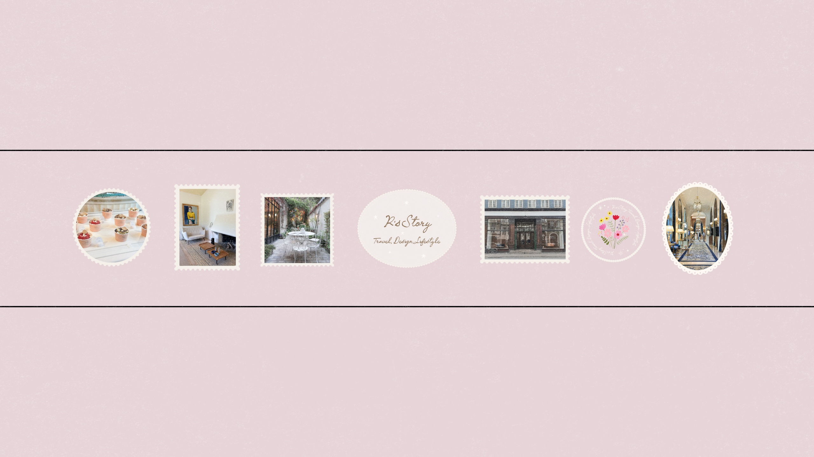

An online travel magazine
Travel, Design & Little Joys
A little inspiration for your own story.
Welcome
Beautiful streets, quiet cafés, thoughtful design and the small discoveries of everyday life — collected slowly, so you might feel like enjoying your own story a little more.
Gallery
A summer in Copenhagen
Slow lunches, beautiful chairs, blue-and-white porcelain and long summer light. Select a photo to view it larger.
Little Joys
How are you feeling today?
Choose a mood and receive a photograph and a few gentle words, chosen just for this moment.
Follow the story